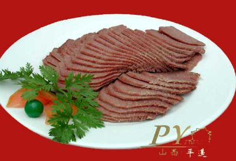
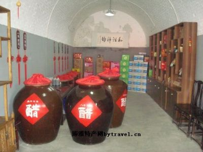
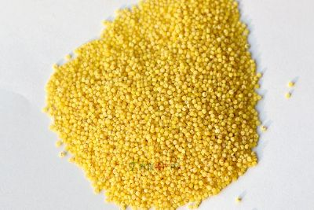
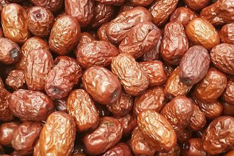
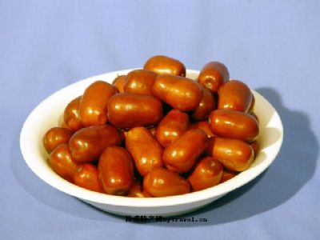
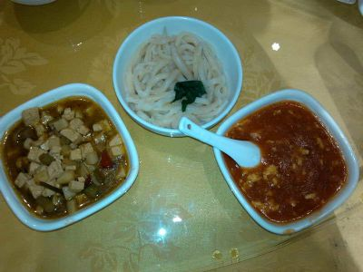
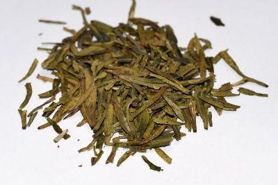

平遥牛肉是博大精深、源远流长的中国食文化的精华之一，古汉时就有“卖刀买犊，卖刃买牛，游刃有余”的对牛肉加工的描述，而风味独特、久负盛名的平遥牛肉早在明清时代就已远销亚洲各国，史载清末，慈禧太后途经平遥，享用平遥牛肉后，闻其香而提其神，品其味而解其困，故将其定为皇宫贡品。平遥牛肉久负盛名，起源年代无考，清代时已誉满三晋。清嘉庆年间，邑人雷金宁及其子孙三代，在平遥牛肉城内文庙街设有兴盛雷牛肉店，长达百余年。到光绪末年，又有任大才与其子任仰文在城内西大街设立自立成牛肉铺，所制牛肉可与兴盛雷牛肉相媲美，均为正宗产品。 
老陈醋产于清徐县,至今有几千年的醋历史文化。老陈醋色泽为红棕色，味道以“绵、酸、甜、香”为主，为我国四大名醋之首。产于山西清徐。“东湖”牌老陈醋，始创于明未清初，至今已有350多年的历史，系山西老陈醋之正宗。“东湖”牌老陈醋，以其精湛酿造技艺和色、香、味俱佳的优良口质，驰名中外，居中国名醋之首。特点：色泽棕红，醋香浓郁，酸味柔和适口，滋味回甜醇厚，可冷调熟烹。主要成份是醋酸，并含多种有机酸、氨基酸等。具有增加食欲、助长消化、解腥去腻、分解脂肪、防病强身之功效是保健和调味之佳品。据传，周代时，在山西就开始了酷的生产，而老陈醋，在春秋战国时代，古晋阳就有一些作坊开始酿造。第一个正式推出“山西老陈醋”名牌的，是制作人王来福。清朝顺治年间王来福来到清源（今清徐县），利用当地原料充足、水质优良的条件开办醋坊，改陈年白醋为熏醋。实际上，老陈醋的酿造要比王来福早得多。
山西醋品种繁多，老陈醋为其代表性的名产。其它还有陈醋、普醋、双醋、特醋、名特醋、味醇等许多品种。如从生产酷的原料区分，则有高梁醋、玉米醋、小米酷、柿子醋、果醋、酒糟醋、粉渣醋、红薯醋等多种。
老陈醋，具有一般醋的酸醇、味烈、味长等特点，同时，还具有香、绵、不沉淀的特点。另外，老陈酸储存时间越长越香酸可口，耐人品味。而且，过夏不霉、过冬不冻，颜色深橙，为山西醋中独具一格、质地优良的佳品。 
产于山西省沁县（古称沁州）的一种小米。该米品质优良，独具特色，食之甜香松散，非常可口，由于具有高营养价值，被誉为“小米之王”。是我国四大名米之一。“沁州黄”小米在1919年参加印度国际博览会便饮誉海外。在国内连续被评为一级小米，获“全国最佳小米”称号。小米“沁州黄”为什么叫“吴阁老”呢？这里还有一段传说：相传在明代时，沁州檀山一带有座古庙，庙里住着几位和尚，生活清苦，免不了忍饥挨饿，他们看见庙周围的土地荒芜，就开垦出来，种上了糙谷。经过几年的精心栽培驯化，糙谷发生了神奇的变化。这种谷子，色泽蜡黄，颗粒圆润，状如珍珠，晶莹明亮。煮成饭后松软可口，味道清香，越嚼越香，遂起名为“爬山糙”。 
交城骏枣已有1000年以上的栽培历史，曾先后展出于法国巴黎博览会上。骏枣形态独特，呈瓶形或上细下粗的圆柱形。色泽深红，皮薄肉厚，核小果大，脆甜味香，果肉重量占总重量的95%以上，故有“八个一尺，十个一斤”之说。此枣味甜质脆，生食制干均优。鲜枣含糖28.69%，含酸0.45%，富含维生素C等营养成分。交城骏枣是山西四大名枣之一，誉为“枣后”，素有“八个一尺、十个一斤”之称。骏枣果大肉厚、质脆味甜、营养丰富、用途广泛。枣肉可提取食用香精，又可入药，有补血益气、安神养胃、健脾抗癌之功能。
地域范围:交城骏枣分布于山西省交城县中南部，吕梁山东侧，晋中盆地西部边缘，介于东经111°24′-111°17′和北纬37°28′-37°54′之间。分布面积1822.11平方公里，海拔高度800-1200米；分布于交城县天宁镇、夏家营镇、西营镇、洪相乡、岭底乡、西社镇等地。地域保护范围面积3500公顷,总生产面积600公顷，年总产量3000吨。 
太谷县里美庄为主产区，榆次、平遥、交城、清徐也有栽培。壶瓶枣传说在春秋战国时期就有栽培，果实大，以形似“壶”状而得名。果皮薄，肉厚质脆，甜酸适度。鲜枣含折光糖37．8％，总糖30．35，酸0．57％，糖酸比52．92：1。每100克鲜枣含维生素C493．2毫克。干枣含糖71．38％，酸3．15％，糖酸比为22．66：1。每100克干枣含维生素C30．13毫克。红枣味甜可口，营养丰富，保健医疗价值很高，民间有“每日食三枣，一辈子不显老”的说法，长期食用，对增进人体健康有重要作用。其叶、枝、核、枝皮及树根均可入药，主治心腹邪气，有益气、补血、养胃、安神之功，凡身体一切虚弱之症，久服轻身延年，坚志强力。
地域范围:太谷壶瓶枣地理标志产品保护范围为山西省太谷县明星镇、侯城乡、北汪乡、水秀乡、胡村镇、阳邑乡、小白乡、任村乡、范村镇等9个乡镇现辖行政区域。该品种位于山西省晋中盆地东北部的太谷县。东北与榆次区相依，东南与榆社县交界，西南与祁县毗邻，西北与清徐县接壤。地理坐标为东经112°28′-113°01′，北纬37°12′-37°32′，壶瓶枣种植面积10000公顷，年产量约4万吨。 
用筷子沿盘边剔面。这种面食操作别致，筋软爽口，易于消化，配上大炒肉、炸酱、荤素打卤，别具一格。剔尖两端细长，中间部分稍宽厚，白细光滑，软而有筋，浇上浇头，再配以调味佐料，食之十分可口，是晋中民间主要面食之一。在人们日常生活中，由于剔面工具不同，剔尖的种类很多。如用木匙、竹类筷或铁匙、铁尖筷剔制的称剔类；用大海碗、竹类筷剔制成的称便类；而用瓷盘、竹类筷剔制成的则称转盘拔尖等，花样繁多，各具特色。 其次是剔尖相传清乾隆年间，榆次一个名叫常万达的，在恰克图城开设的四乡联号商行中的饭庄里，专营山西面食剔尖等，使剔尖一举成名。由于剔尖有着浓郁的地方特色，且制作简便，食之可口。所以，剔尖不仅在国内流传甚广，而且传入海外许多国家和地区。 
火烧是我省孝义具有特殊风味的一种饼类小吃，孝义火烧有咸火烧、糖火烧、菜火烧之分。咸火烧是内包咸盐和茴香，上鏊烙烤。食时，若佐以葱花、大蒜、醋、酱油、盐、味精，更是美味可口。糖火烧的制作将老酵、碱面和凉水一起放入盆内搅成稀糊，再倒入面粉和成团、面和好后，以手蘸凉水反复搓揉，直到面团光润时，盖上湿布饧30分钟。同时把红糖、芝麻酱、桂花搅拌调成糖酱。然后把面团放在抹了油的案板上，搓成长条、切块、摁扁，再横着擀成五寸长、三寸宽的厚片，然后，左手(拇指在上，其它四指在下)拿着厚片的左端将面提起，再反腕向案板右方一甩(甩时劲头要匀，动作要利落)，“啪”地一声横落案板上成为尺把长的面片。上面抹匀糖酱，用左手托起面片左端轻轻向外伸长，同时右手把面片由右向左卷成卷，搓匀后揪成面剂，捏成桃形，收口朝上摁成圆饼。按此法将其余面块全部做完。铁鏊在微火上烧热，涂抹麻油，火烧饼坯放鏊上烙烤，烤约5分钟，再翻过来烙正面(两面约烤10分钟左右)。随后放在烤炉中，用微火烤成酱黄色即可。
